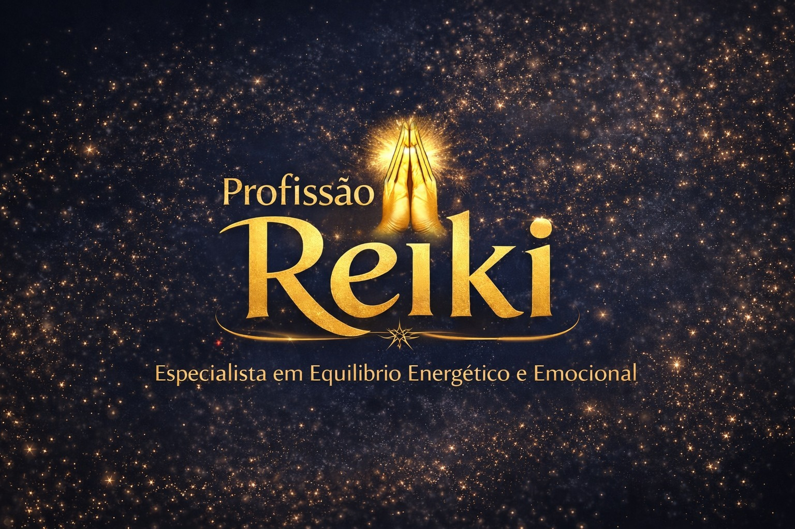
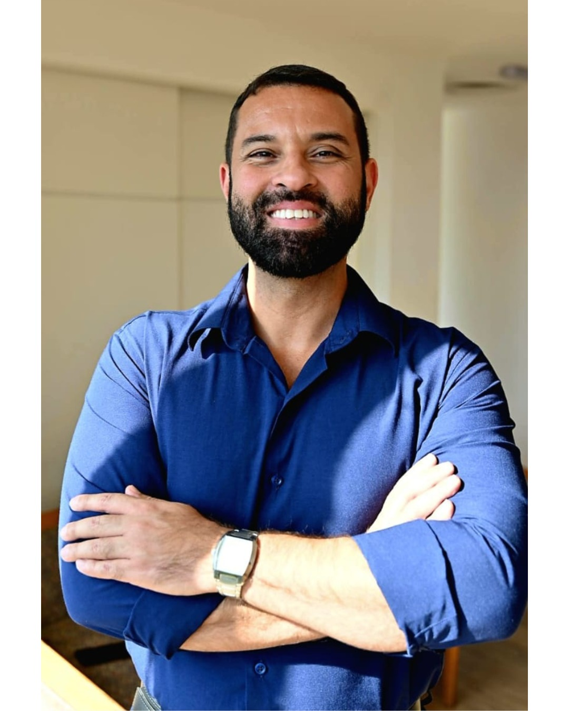

Chega de atendimentos esporádicos. Construa uma agenda próspera com clientes comprometidos através do Método Reiki Estruturado.

O Profissão Reiki é uma formação completa para terapeutas e reikianos que desejam se tornar: Especialistas em Equilíbrio Energético e Emocional.
Você aprenderá a:
Porque transformação emocional não acontece em uma sessão isolada. Ela acontece em processo terapêutico estruturado.
O grande diferencial da formação é o MRE— Método Reiki Estruturado. Um processo terapêutico criado para conduzir o cliente por uma jornada clara de transformação. O método é dividido em 4 fases terapêuticas:
Redução da tensão e ansiedade do cliente.
Diagnóstico de padrões emocionais e bloqueios.
Liberação energética e novos estados emocionais.
Estabilização do equilíbrio e mudança duradoura.
Durante a formação você irá desenvolver os quatro pilares que sustentam uma carreira sólida como terapeuta.
Desenvolva uma mente próspera para cobrar com segurança e valorizar seu trabalho.
Aprenda a criar uma apresentação clara que transforma curiosidade em interesse real.
Deixe de ser generalista e torne-se uma autoridade como Especialista em Equilíbrio.
Atraia clientes pelo Instagram vendendo a transformação, não apenas a sessão.

Meu nome é Denis França e sou Especialista em Equilíbrio Energético e Emocional. Além disso, também sou terapeuta holístico, Mestre em Reiki Usui e Reiki Money, professor e palestrante.
Minha jornada nas terapias começou a partir de uma busca pessoal por mais equilíbrio, clareza e propósito. Ao longo dos anos, aprofundei meus estudos sobre energia, emoções e desenvolvimento humano, percebendo que muitos bloqueios na vida das pessoas estão diretamente ligados ao seu estado energético e emocional.
Com o tempo, também percebi que muitos terapeutas aprendem técnicas poderosas, como o Reiki, mas não aprendem como estruturar atendimentos, conduzir processos terapêuticos e transformar isso em uma prática profissional.
Foi a partir dessa visão que desenvolvi o MRE – Método Reiki Estruturado, um processo que organiza o atendimento terapêutico em fases claras, ajudando terapeutas a conduzirem seus clientes com mais segurança e resultados.
Hoje, através das minhas formações e mentorias, ajudo terapeutas e reikianos a se posicionarem de forma profissional, estruturarem seus atendimentos e utilizarem o Reiki como uma ferramenta de transformação real na vida das pessoas.
Ao entrar no Profissão Reiki, você terá acesso a:
Se você deseja transformar o Reiki em uma prática profissional estruturada e ajudar pessoas de forma profunda, essa formação é para você.
Clique no botão abaixo e garanta sua vaga. As vagas são limitadas!
ou
Para ajudar você a estruturar seus atendimentos e acelerar seus resultados.
Sim. O Profissão Reiki não é um curso para aprender Reiki do zero. Ele é uma formação para terapeutas e reikianos que já conhecem a técnica, mas desejam aprender a estruturar atendimentos profissionais.
Sim. Você aprenderá o MRE — Método Reiki Estruturado, um processo terapêutico dividido em 4 fases: Acalmar, Compreender, Transformar e Sustentar.
Depende da dedicação, mas um processo estruturado com 5 clientes/mês já pode gerar aproximadamente R$ 3.000 mensais. Com processos de 8 sessões, esse valor pode ser muito superior.
Não. O foco não é ensinar a técnica, mas ensinar como aplicar o Reiki de forma profissional e estruturada para transformar a técnica em uma atividade próspera.
Sim. O Profissão Reiki não é ligado a uma linhagem específica. A formação pode ser aplicada por praticantes de qualquer sistema (Usui, Karuna, Xamânico, etc.).
Não necessariamente. Os princípios do MRE podem ser aplicados também por terapeutas holísticos, integrativos e profissionais de regulação emocional.